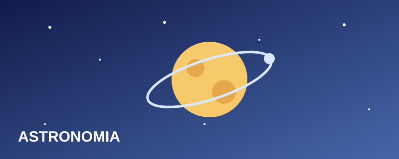
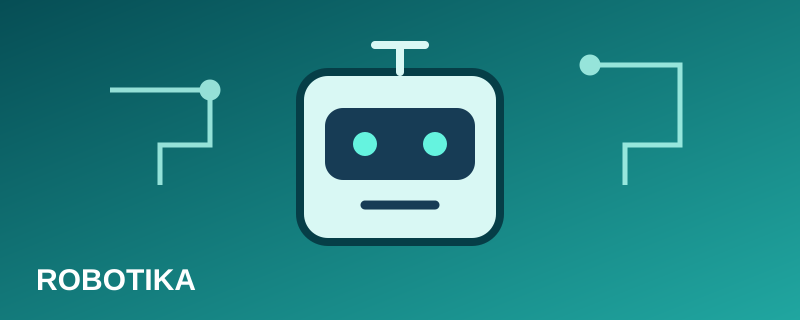
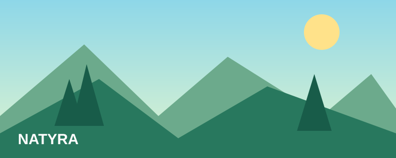
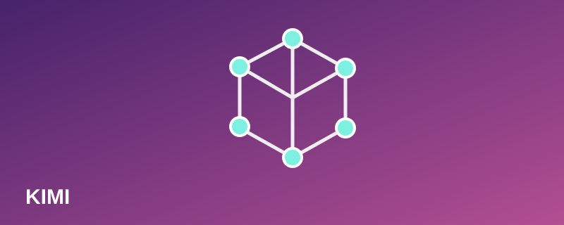
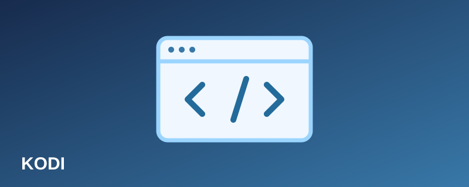
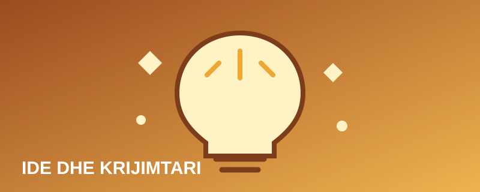

Programi i ditës
Aktivitetet
Gjashtë mundësi për të eksploruar shkencën.

Hapësira
Udhëtim nëpër sistemin diellor
09:30–10:15 · Salla A
Eksploro planetët dhe mëso pse secili ka veçoritë e veta.
Shiko detajet →
Teknologjia
Robotika për fillestarë
10:30–11:15 · Laboratori 1
Ndërto një ide për robot dhe zbulo si udhëzimet krijojnë veprime.
Shiko detajet →
Mjedisi
Laboratori i natyrës
11:30–12:15 · Kopshti
Vëzhgo gjethet, krahaso format dhe diskuto si mbrohet mjedisi.
Shiko detajet →
Eksperimente
Ngjyrat e kimisë
12:30–13:15 · Laboratori 2
Vëzhgo ndryshimet e ngjyrave dhe përshkruaj rezultatet.
Shiko detajet →
Programimi
Krijo faqen tënde të parë
13:30–14:15 · Salla B
Provo HTML dhe CSS për të krijuar një faqe që përshtatet në ekran.
Shiko detajet →
Krijimtaria
Ide të vogla, zgjidhje të mëdha
14:30–15:15 · Salla C
Formo një ekip, zgjidh një problem dhe prezanto një ide të re.
Shiko detajet →Mëso duke provuar
Rreth festivalit
Festivali është një shembull mësimor i sajuar. Aktivitetet nxisin pyetjet, bashkëpunimin dhe zbulimin përmes ushtrimeve praktike.
Detajet e aktiviteteve
Udhëtim nëpër sistemin diellor
Salla A · 09:30–10:15
Robotika për fillestarë
Laboratori 1 · 10:30–11:15
Laboratori i natyrës
Kopshti · 11:30–12:15
Ngjyrat e kimisë
Laboratori 2 · 12:30–13:15
Krijo faqen tënde të parë
Salla B · 13:30–14:15
Ide të vogla, zgjidhje të mëdha
Salla C · 14:30–15:15
Kontakti
Për pyetje rreth programit, shkruaj te festivali@example.com.